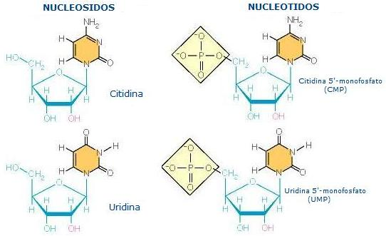
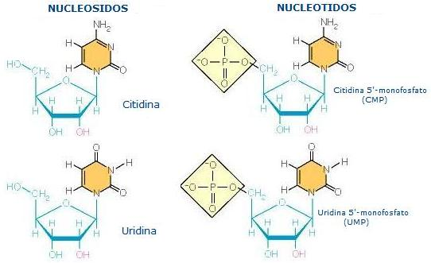

El polvo de estrellas no está solo para componer canciones. Es la materia de la cual está hecha la vida. La vida es un fénix nacida de las cenizas cósmicas lanzadas en el espacio por los estertores de la muerte de las estrellas que ya no brillan más sobre nuestras cabezas. Nuestro Sol no estaba en la primera generación de estrellas formadas cuando e Big-Bang hizo posible la condensación de la energía y la materia, y la agregación de la materia en nebulosas y estrellas. Los teóricos nos dicen que las primeras estrellas estaban compuestas principalmente por hidrógeno, y que aún puede haber existido una gran cantidad de helio primordial, con trazas de litio y berilio. El material emanado en la explosión que generó el universo no contenía carbono ni nitrógeno, ni oxígeno, ni cualquier otro de los elementos más pesados que contienen nuestros cuerpos, o nuestro planeta, o nuestra estrella el Sol. Algunos de aquellos elemento, particularmente los más livianos, fueron generados por la fusión del hidrógeno primordial en las entrañas feroces de las estrellas de la primera generación. La mayoría de los elementos pesados, no parecen haberse formado durante la vida de esas estrellas sino durante sus muerte explosivas, cuando ellas se transformaron en novas o supernovas.
Ahora se vuelve claro que nuestra estrella de día, el Sol, como la vida que con el comenzó es también un fénix. Esta estrella surgió de las cenizas y de los gases crematorios lanzados en el espacio cuando las estrellas más viejas explotaban - como reactores nucleares de presión explotando por sus válvulas - creando vastas nubes funerarias, o nebulosas, de polvo y gas en las regiones interestelares de nuestra galaxia. A partir de la recondensación de tales nebulosas, tal vez llevada a cabo por una onda de choque ocasionad por una nova o una supernova, nació nuestro sol, con su séquito de planetas, satélites y cometas.
El mundo era un lugar muy diferente antes de haber dado luz a la biosfera. Sin la cobertura vegetal en la superficie de costra proto-continental la fuerza de la erosión era mucho más formidable de lo que es ahora. Hoy el flujo de las aguas lluvias se ha suavizado y relentizado por la capa verde de vegetación que protege la superficie planetaria del ataque de la violencia aérea. Una capa de ozono, en la alta estratosfera, protege la vegetación de los rayos destructores del flujo del luz ultravioleta proveniente del Sol. Pero no siempre fue así.

Antes del advenimiento de las algas y sus descendientes, las plantas verdes, había muy poco oxígeno libre en la atmósfera. Antes que hubiesen plantas y algas, no había fotosíntesis capaz de producir oxígeno como subproducto [1] y el único oxígeno libre que podría encontrarse en camino a la atmósfera de la Tierra debía haber sido una pequeña cantidad resultado de la ruptura de las moléculas de agua inducidas por la radiación en la atmósfera superior.
El oxígeno es una sustancia altamente reactiva, y no permanece durante mucho tiempo en la atmósfera. Es una continua reacción quemando material orgánico para producir dióxido de carbono, y oxidando el hierro y otros materiales en la corteza de la Tierra para producir capas rocosas con óxidos de hierro (redbeds). Si toda la vida súbitamente fuese extinta, dentro de aproximadamente dos mil años apenas habían cantidades insignificantes de oxígeno en la atmósfera! Es bastante obvio, por lo tanto, que antes de la existencia de seres vivos la atmósfera carecía de oxígeno.
El hecho que la atmósfera primitiva no tenía oxígeno fue bueno durante los períodos en los cuales la vida surgió, pues el oxígeno es un enemigo feroz de todas las moléculas necesarias para la vida. Con oxígeno presente en la atmósfera los azúcares, aminoácidos y todos los otros compuestos que contienen carbono necesarios en la estructura de las células habrían sido destruidos poco después de su formación o - lo más probable-tendrían que haberse formado en primer lugar. Uno de los motivos para que la vida no se origine espontáneamente hoy es que la presencia de oxígeno lo hace imposible. (El otro motivo, ya conocido por Charles Darwin hace más de un siglo, es que cualquier molécula orgánica que se formase espontáneamente hoy en día sería devorada por los organismos ya vivos antes que pudiese realizar las organizaciones complejas necesarias para su autorreplicación). Aún así, hoy tenemos remanentes de una Tierra antes del oxígeno en muchas especies de microorganismos anaeróbicos que viven en nuestras heridas o que envenenan nuestros vegetales conservados de manera inapropiada. Prosperando en la ausencia de oxígeno, esos organismos primitivos son destruidos por el mismo gas que alimenta los “fuegos” de las formas de vida más altas.
Si bien nosotros poseemos una buena certeza que la atmósfera de la Tierra no tenía oxígeno (y el escudo protector de su forma derivada, el oxígeno) en la época en que la vida evolucionó, hay dudas considerables sobre cual era su composición. Parece claro que la composición de la atmósfera cambio durante los primeros 500 mil millones de su existencia - el período durante el cual la vida se originó. Argumentando por analogía con las atmósferas de los planetas gigantes, tales como Júpiter y Saturno, los primeros estudiosos de la biopoyesis (el origen de la vida) asumieron que la atmósfera primitiva era bastante “reductora” [2] conteniendo substancias como el hidrógeno (H2), el vapor de agua (H2O), el metano (CH4), el amoníaco (NH3), y el gas sulfhídrico (H2S), etc. Muchos de los primeros experimentos intentaron descubrir que tipos de moléculas se podrían formar espontáneamente (las cuales iremos a examinar en seguida) empleando ese tipo de atmósfera. A pesar de los persistentes esfuerzos por localizar rocas sedimentarias antiguas que tengan evidencia de haber sido expuestas a tal atmósfera han sido bastante frustrantes, y la mayoría de los estudiosos hoy sienten que la atmósfera - generada por las emanaciones volcánicas durante la separación y consolidación del núcleo de la Tierra - contenía principalmente hidrógeno, vapor de agua, nitrógeno (N2), monóxido de carbono (CO) y gas sulfhídrico, con cantidades menores de metano, dióxido de carbono (CO2) y dióxido de azufre (SO2). Hay motivos para suponer que esta se transformó gradualmente hasta una atmósfera compuesta principalmente de vapor de agua, dióxido de carbono, nitrógeno y dióxido de azufre, con cantidades menores de monóxido de carbono, metano, gas sulfhídrico e hidrógeno. Yo no me sorprendo en que no hayamos encontrado cualquier roca del período más antiguo de la historia de la Tierra. Nosotros sabemos hoy que la corteza terrestre está siendo continuamente reciclada por las fuerzas que causan la deriva continental; cuando más viejo es un pedazo grande de tierra, mayor es la probabilidad de que esta haya sido reciclada en los 500 mil millones de años en los que nuestro planeta ha existido. Más aún hay motivos para creer que una atmósfera primitiva como fue asumida por los primeros investigadores no podría haber existido por mucho tiempo. Bien rápido, creo yo, que ésta habría agotado componentes tales como el metano, el amoníaco, etc, por su conversión en los compuestos bioquímicos de los cuales las primeras cosas vivas de desarrollarían. Puede haberse demorado apenas unos pocos millones de años para que tal atmósfera haya sido sustituida por la menos reductora, hoy aceptada por la mayoría de los estudiosos. ¡Es muy probable que la evolución de los sistemas vivos ya estuviese ocurriendo en la época en que las rocas sedimentarias se formaron en cantidades significativas!

A pesar de las dudas que envuelven la naturaleza de la atmósfera primitiva de la Tierra, los científicos que buscan explicar los orígenes de los compuestos químicos necesarios para la formación de las células vivas se han enfrentado con más soluciones posibles de las que pueden manejar en el momento. Por ejemplo, se demostró, en ambientes simulados[3], que los aminoácidos (los bloques de construcción de las proteínas) y otros compuestos bioquímicos importantes pueden haberse formado en un ambiente muy reductor, semejante a la atmósfera de Júpiter como en una atmósfera menos reductora hoy aceptada por la mayoría de los estudiosos. De hecho, cualquier atmósfera posible (o sea, una atmósfera libre de oxígeno) puede ser usada para generar un amplio espectro de los compuestos bioquímicos críticamente importantes.
Estos hechos son muy alentadores para las personas que buscan una respuesta no mágica a la pregunta “¿Cómo comenzó la vida?” - sin embargo, son frustrantes para los científicos que buscan respuestas muy precisas para todas las preguntas. Nuestra frustración aumenta, más aún, cuando percibimos que la atmósfera primitiva puede no haber sido el sitio principal de producción bioquímica: la astronomía espectroscópica muestra que tipos simples de moléculas biológicamente importantes pueden ser encontradas a través de nuestra galaxia, y el análisis de meteoritos (tales como las condritas carbonáceas) muestran que la mayoría de las biomoléculas estaban presentes en la nebulosa solar aun antes que esta se empezase a condensar para formar nuestro planeta - con o sin atmósfera!
Ya notamos que tenemos más fuentes adecuadas de las que requerimos para la producción de los compuestos químicos necesarios. De igual forma, poseemos más métodos adecuados de producción de los necesarios. Por ejemplo, en 1953 Stanley Miller (por aquel entonces estudiante de doctorado del ganador del Nobel Harold Urey en la Universidad de Chicago) ejecutó un experimento ahora clásico en el cual él simuló los relámpagos de la atmósfera primitiva pasando corrientes eléctricas a través de un cámara de gas que contenía gases semejantes a la atmósfera de Júpiter (ver figura 4). Para el deleite de todo el mundo menos de los creacionistas, Miller analizó “la sopa” resultante después que el experimento funcionó por varios días y descubrió aminoácidos y otras moléculas de importancia biológica. Desde entonces, variaciones del experimento de Miller han presentado casi todos los bloques de construcción químicos necesarios para formar células vivas.

Figura 8. Diagrama del montaje usado por Stanley Miller para simular las descargas de los relámpagos en la atmósfera primitiva. Al condensar vapor de agua en agua líquida y colocando a hervir el agua en el frasco, los gases son forzados a circular en sentido horario y a pasar repetidamente entre los electrodos que descargan corriente. La mayoría de los productos más complejos producidos por acción de la corriente eléctrica sobre los componentes de la atmósfera fueron atrapados en la fase líquida del sistema (donde se podían ser examinados periódicamente durante el curso del experimento) e impedía que fuesen degradados por tener que pasar de nuevo a través de la cámara de descargas. Los creacionistas afirman que es un fraude colocar una trampa para impedir la perdida de los productos obtenidos. En realidad, la trampa de agua simula adecuadamente el papel del océano primitivo, en el cual las moléculas recién formadas se asentarían, protegiéndolas así de la desintegración causada por los relámpagos. Los creacionistas también critican variaciones de esas substancias en las cuales se substituyen las descargas eléctricas por radiación ultravioleta. La radiación, dicen ellos, descompondría los bioquímicos después de su formación, y así ninguna cantidad significativa de moléculas podrían acumularse para formar sistemas vivos. Los no-creacionistas, entre tanto, están concientes que la Tierra gira en su eje una vez por día, y que la luz ultravioleta no podría degradar las moléculas durante el período de la noche, cuando las partículas estarían depositándose de la atmósfera hacía los océanos, donde estarían protegidas de la degradación causada por la luz solar que volvería al día siguiente. De hecho, el Principio de Le Châtelier, una regla conocida por los químicos de las universidades en el segundo grado, nos dice que los océanos servirían de trampa aún durante el día para muchas de las moléculas creadas por la luz ultravioleta. Ahora si muchas de las moléculas fuese de hecho degradadas después de su formación, la presencia del mar como un pozo de depósito forzaría la reacción como un todo a proseguir en dirección de la construcción y no de la destrucción.*
Los relámpagos, entretanto, no eran las únicas fuentes de energía en la Tierra primitiva, y es tranquilizador saber que el experimento de Miller (como también los experimentos con atmósferas menos reducidas) se han hecho de nuevo usando radiación ultravioleta (una fuente de energía extremadamente importante en la Tierra primitiva antes que existiese la capa de ozono), radiación atómica (imitando las formas de alta energía abundantes en la nebulosa solar antes de la formación de la Tierra), y el calor (imitando los efectos del vulcanismo) como fuentes de energía - y en todos los casos fueron obtenidos los mismos resultados generales! La formación de los compuestos bioquímicos necesarios parece ser una consecuencia natural de la quimica cósmica, una vez dadas las condiciones planetarias minimamente adecuadas.
La química del Cosmos está reflejada en la composición de los elementos de una célula viva común. A pesar de la existencia de más de cien elementos químicos diferentes, aproximadamente el 95% del peso de una célula se debe a apenas cuatro elementos: oxígeno (cerca del 62%), carbono (cerca del 20%) y hidrógeno (cerca del 10%) y nitrógeno (cerca de 3%). En el Universo como un todo, esos cuatro elementos corresponden por cerca del 70% de la masa observada. La importancia universal de esos cuatro elementos es aún mayor si se ignora los elementos químicamente inertes como el helio y el neón, que juntos forman el 28% de la masa del Universo. Si nosotros calculamos las abundancias cósmicas de acuerdo con el número de átomos presentes, en lugar de la masa, los cuatro elementos más importantes representan el 99% de los átomos químicamente activos en el Universo!
Aparte de los “cuatro grandes”, los seres vivos contienen un puñado de otros elementos comunes. En orden decreciente de importancia, podemos listar el calcio, fósforo, cloro, azufre, potasio, sodio, magnesio, yodo y hierro. En términos de abundancia cósmica (ignorando lo cuatro grandes y los elementos inertes) el orden relativo de abundancias de elementos es: magnesio, hierro, aluminio[4], sodio y calcio (aproximadamente iguales en abundancia), fósforo y potasio. La materia de la vida es tan solo la materia común de las estrellas y nebulosas.
A pesar de las cualidades morfológicas de las proteínas de los organismos - encontradas en las formas apropiadas para la vida en nichos tan variados como escapes hidrotermales en el fondo de los océanos, as alturas congeladas de los Himalaya, y los ductos reproductivos de los calamares- a nivel químico los organismos muestran una similaridad abrumadoramente simple. Las biomoléculas pertenecen a cuatro categorías principales - lípidos (grasas), carbohidratos (azúcares, almidones y celulosa), proteínas (enzimas y fibras estructurales), y ácidos nucleicos (ADN y ARN)- más un pequeño número de compuestos “mixtos” importantes, como pigmentos, coenzimas, etc.
Considerando la lipofobia preponderante en nuestra cultura actual, es importante decir algo bueno sobre las grasas y apuntar que los lípidos son -bien literalmente-de importancia vital. No solo sirven como fuente de energía y de átomos de carbono que pueden ser usados para construir casi cualquier otro tipo de molécula, las moléculas de lípidos (especialmente en las formas combinadas con fosfato) son el principal constituyente de las membranas de las células. No es exagerado decir que la vida seria imposible sin las membranas que impiden la disolución de las células, regulan las sustancias que entran y salen de la célula, sirven de lugar donde se procesan muchas reacciones químicas, y para limitar en compartimentos las células de modo que muchos proceso químicamente conflictivos puedan ocurrir simultáneamente. Imagine como seria intentar hacer un postre y una torta al mismo tiempo si ambos tuviesen que ser preparados en la misma taza! Debido a su propiedad de aislantes eléctricos, las membranas de lípidos permiten que ciertas células reciban una carga eléctrica, haciendo posible la evolución de los cerebros, y la redacción de este artículo.
Los carbohidratos incluyen los azúcares simples como los polisacáridos, el almidón y la celulosa, en los cuales millares de moléculas de azúcares simples (glucosa) se juntan para formar una molécula bien larga y fibrosa. A diferencia de los lípidos, que son compuestos principalmente de carbono e hidrógeno, los carbohidratos contienen aproximadamente tantos átomos de oxígeno como de carbono. Ellos son fuentes importantes de energía, hacen parte de las paredes celulares de las plantas, y de los componentes de almacenamiento de información en los ácidos nucleicos ADN y ARN. El ADN, el material del que están hechos los genes, contienen un azúcar de cinco carbonos, la desoxirribosa. El ARN, que ayuda a traducir la información almacenada en el ADN en proteínas contiene un azúcar, la ribosa. Además de los azúcares, los ácidos nucleicos contienen fosfato y cinco compuestos diferentes que poseen nitrógeno, denominados bases nitrogenadas (cuyos nombres comunes son adenina, timina, citosina, guanina y uracilo). Los ácidos nucleicos poseen la habilidad crucial de reproducirse: ellos son autocatalíticos.

A diferencia de la celulosa, que es un polisacárido compuesto de miles de unidades de glucosa idénticas (monómeros) alineados, un ácido nucleico es un polímero formado por cuatro [5] tipos diferentes de monómeros (las bases nitrogenadas) juntos.
Cada nucleótido es en sí una entidad compleja, estando compuesto de una molécula de azúcar, una base nitrogenada y un grupo fosfato. La habilidad de los ácidos nucleicos para almacenar información genética deriva del modo no aleatorio en el cual los cuatro los cuatro tipos de bases están alineadas a lo largo de la estructura de la molécula. Se puede pensar en las cuatro bases nitrogenadas como un alfabeto como la clave Morse, el cual solo contiene cuatro letras (A, T, C y G) puede codificar las “recetas” para hacer cualquier organismo. La diferencia entre los humanos, los musgos y sus ratones radica en que sus moléculas de ADN son diferentes.
 
La última categoría importante de compuestos bioquímicos encontrados en la célula viva comprenden las grandes moléculas denominadas proteínas. También conocidas como polipéptidos, las proteínas son polímeros compuestos por veinte tipos diferentes de unidades de monómeros, los aminoácidos. Los aminoácidos tienen ese nombre por el hecho que contienen por lo menos dos componentes químicamente activos: un grupo amino (-NH2) y un grupo carboxilo (— COOH). Todos los aminoácidos contienen los elementos carbono, hidrógeno, oxígeno y nitrógeno. Varios de ellos también contienen el elemento azufre: Los aminoácidos pueden unirse cuando el grupo amino de una molécula reacciona con el grupo carboxilo de otra molécula para formar un enlace peptídico (la molécula doble que se origina se denomina dipéptido). Al unir cientos o miles de aminoácidos, se crea un polipéptido - una proteína. Las proteínas son extremadamente importantes como enzimas - moléculas gigantes sirven como catalizadores controlando toda una gran variedad de “matrimonios y divorcios químicos” que constituyen la condición viviente. Las enzimas proteicas producen también los nucleótidos necesarios para la replicación del ADN o para producir ARN.
Entre los compuestos mixtos de importancia bioquímica tan solo mencionaremos los pigmentos: Los pigmentos son mucho más importantes de lo que se podría suponer. Ellos hacen mucho más que colorear los corales o pintar los pétalos de las flores, su importancia principal tampoco la hace el hecho que estén en las células fotorreceptoras de las retinas humanas, permitiendo que los lectores lean este artículo! Algunos pigmentos, como la clorofila, permite que los seres vivos capturen la energía solar de los fuegos nucleares del sol. Otros pigmentos, tales como los citocromos, sirven para transferir esa energía solar - almacenada en forma de enlaces químicos - de un banco de energía celular a otro. En últimas, toda la energía que anima el pulso de la vida en la Tierra es luz estelar - y toda ella fue capturada por las antenas químicas conocidas como pigmentos.
Habiendo visto brevemente las necesidades químicas de los seres vivos, debemos ahora intentar responder la pregunta ¿Cómo surgieron esos productos químicos durante los días de aurora de nuestro Planeta? ¿Cómo pudieron llegar a existir sin la ayuda de una inteligencia sobrenatural?
En el caso de los lípidos, nuestros problemas son pocos. La presencia de hidrocarburos en las nubes estelares y cometas, y la presencia de ácidos grasos (hidrocarburos que contienen dos átomos se oxigeno por molécula a parte de carbono e hidrógeno) en los meteoritos hace probable que las sustancias grasas disponibles para la incorporación de protocélulas en el inicio. En cualquier caso, es mucho más fácil producir ácidos grasos y otros lípidos a partir de atmósferas con metano expuestas a descargas eléctricas o a superficies calientes de lavas volcánicas ( el metano, debemos recordar, debe haber sido un componente menor de la atmósfera primitiva). Insolubles en agua, los lípidos habrían formado películas como membranas en las superficies de los primeros océanos. Dada la turbulencia de la acción de las olas, esas películas oleosas deben haberse quebrado frecuentemente para formar vesículas cubiertas por membranas y llenas de agua y otros componentes presentes en la superficie del agua.
Naciendo como los lípidos - o en la nebulosa solar antes que la agregación de microplanetas formasen la Tierra, o que en los procesos atmosféricos que formaran los lípidos - estaban los más importantes de los pigmentos, especialmente las porfirinas, los principales componentes de la clorofila, de los citocromos y del grupo hemo (el pigmento que da a la hemoglobina su color rojo).
La síntesis de los azúcares en la Tierra antigua tampoco era muy difícil, aunque esta represente un rompecabezas químico para el cual aún no se ha obtenido una información detallada. Se sabe hace muchos años que el formaldehído (H2CO) - una de las primeras sustancias formadas por los experimentos de la cámara de descargas - puede ser polimerizado en azúcares simples en condiciones alcalinas, si están presentes catalizadores como el hidróxido de calcio o el carbonato de calcio (piedra caliza). Más interesante es el descubrimiento que una arcilla mineral común, el caolín, calentado a la temperatura de ebullición del agua puede volver soluciones diluidas de formaldehído en una gran variedad de azúcares - incluida la ribosa, necesaria para el ARN y el ATP. [6]
El problema intrigante asociado con los carbohidratos es este: Cuando los azúcares se mezclan con los aminoácidos (entre los productos más comunes de los experimentos de las cámaras de descargas eléctricas) estas se anularían mutuamente, interactuando por la reacción de Marillard para producir un producto marrón y feo que se parece a lo que se forma cuando se deja expuesta una manzana al aire. Tanto como se, no se ha encontrado ningún uso para tales compuestos en el curso de la biopoyésis. Una posible solución viene de varias líneas de indicios. Primero que todo los azucares no parecen haberse formado tan abundantemente como los aminoácidos y así también aún habrían aminoácidos suficientes para que se convirtieran en proteínas después de la “reacción marrón”. En segundo lugar, excepto por los azúcares necesarios en los nucleótidos, no parece que las primeras protocélulas casi vivas tenían mucha necesidad de carbohidratos, y así la pérdida de algunas moléculas de azúcar no habría tenido un efecto prohibitivo en la biopoyésis. En tercer lugar, se descubrió que la estabilidad de los azúcares en verdad aumenta después que se han juntado las bases nitrogenadas (también producidas en la cámara de descargas eléctricas en otros experimentos). Una vez que pocos experimentos propusieran explicaciones de cómo los azúcares pueden haber se unido a la adenina y a otras bases nitrogenadas, es bastante alentador descubrir que los investigadores en el Laboratorio de Evolución Química de la Universidad de Maryland [7] tienen evidencias experimentales mostrando que por lo menos cinco nucleósidos (nucleótidos sin el grupo fosfato) pueden haberse formado directamente por la descarga de rayos en una atmósfera de metano, hidrógeno y agua! Adiciona un fosfato y tenemos nucleótidos listos para ser polimerizados en ARN y ADN. Adiciono otros dos fosfatos, y tenemos moléculas como el ATP: Con el ATP parece que no hay límites de lo que puede ser hecho.
Ya mencionamos que los aminoácidos están dentro de los productos más abundantes en los experimentos simulando la síntesis de la Tierra primitiva. Es interesante notar que los tipos más comunes de aminoácidos resultantes de las simulaciones de Urey-Miller (glicina, alanina, ácido glutámico, y aspartámico) son justamente cuatro de los cinco aminoácidos más frecuentemente encontrados n los organismos. La serina, el quinto aminoácido, se produce abundantemente en otros tipos de experimentos. Nuevamente, la química de la vida parece ser inherente a la química del Cosmos. En ese punto nosotros podemos explicar los orígenes naturales de la mayoría de las moléculas existentes en los seres vivos. Vimos que los lípidos, pigmentos, aminoácidos, bases nitrogenadas y azúcares pueden haberse formado fácilmente en la atmósfera primitiva - si de hecho estas no estuviesen desde el inicio como una herencia de la nebulosa solar que formó el sistema solar. Lo que queda para mostrar en este artículo es como los aminoácidos pudieron haberse polimerizado en proteínas (usando tan solo aminoácidos “levógiros”) y como los nucleótidos pudieron haberse polimerizado en ARN y ADN.
Los problemas remanentes son un poco más engañosos que aquellos que examinamos anteriormente. Vamos primero a tratar el problema de los aminoácidos levógiros. Todos los aminoácidos, a no ser los más simples, la glicina, contiene lo que se llama un átomo de carbono asimétrico. Esto es simplemente un átomo de carbono unido por sus cuatro enlaces posibles a cuatro tipos diferentes de grupos químicos. Como ejemplo vamos a considerar el segundo aminoácido más simple, la alanina (ver Figura 5). El carbono asimétrico se ve como fluctuando en el centro de una pirámide triangular (tetraedro), con sus cuatro enlaces extendiéndose hasta los grupos químicos ubicados en los cuatro esquinas de la pirámide. Como podemos ver en la Figura 2, hay dos maneras diferentes por las cuales los grupos unidos pueden ser ordenados, y esos dos arreglos son imágenes especulares una de otra. Mirando ambas estructuras simultáneamente, los lectores pueden ver que la L-alanina “zurda” [8] parece ser un reflejo en el espejo de la D-alanina “diestra”. Del mismo modo que no hay forma de arreglar un guante izquierdo para transformarlo en uno derecho (a no ser girándolo al reverso!), entonces no hay manera que la D-alanina pueda girarse o invertirse para transformarse en una L-alanina.
Figura 11. Formas dextrógiras (a la derecha) y levógiras (a la izquierda) del aminoácido alanina. Los seres vivos producen tan solo la variedad L- alanina, mientras que las síntesis artificiales producen una mezcla de ambas formas en proporciones iguales.
Un hecho curioso es que todos los aminoácidos que entran en la composición de las proteínas son exclusivamente de forma L. No se conoce ninguna proteína real que contenga aminoácidos D, si bien la bacteria Bacillus brevis produce una proteína semejante aun antibiótico conocido como gramacidina-S, que contiene D-fenilanina, así como ornitina - que no pertenece al conjunto de los veinte aminoácidos encontrados en las proteínas comunes. El por qué tan solo los aminoácidos son usados es un rompecabezas sin resolver. Es posible que las primeras formas de vida usasen una mezcla de moléculas dextrógiras y levógiras. Al fin de cuentas, cuando se producen aminoácidos en el laboratorio y en simulaciones de la Tierra primitiva, la mitad de las moléculas producidas son dextrógiras y la mitad levógiras. Pero cuando los seres vivos los producen todos son levógiros.
Hay una tendencia, cuando las mezclas de aminoácidos dextrógiros y levógiros se polimerizan, los polímeros contienen más componentes L que D. [9] Es posible que los seres vivos simplemente han exagerado un desvío inherente a la química de la formación de péptidos. Ahora parece ser el caso, la solución para nuestro rompecabezas aguarda en más estudios por hacer. La discusión hasta ahora asumió que todos los compuestos químicos creados en la atmósfera más tarde o temprano acabaran como componentes de una “sopa primordial” -los océanos, mares y lagos del mundo recién nacido. Tal situación de hecho me parece estar establecida más allá de toda duda razonable. Pero si eso fuera verdad, se crea una dificultad: juntar los aminoácidos (y nucleótidos) en polímeros lineales involucra un proceso de deshidratación -remover una molécula de agua a cada para de moléculas que se unen. No parece obvio de primeras como podría removerse agua de unas moléculas que están disueltas en ella. Uno de los primeros en resolver el problema fue el profesor Sydney Fox, de la Universidad de Miami. Él demostró que el agua que contiene aminoácidos podría haber salpicado lava caliente, y al evaporarse el agua queda una membrana seca, la cual puede deshidratarse produciendo péptidos. Experimentalmente, esto se hizo, y resultó una proteína semejante a un polímero que Fox llamó “proteinoide”. El proteinoide se parece mucho a las proteínas naturales, aunque menos regular en su estructura. Como las proteínas naturales, los proteinoides poseen características catalíticas -incluida la capacidad auto-catalítica! Comparados con las enzimas modernas, entretanto, sus capacidades son poco débiles. Pero nosotros no debemos olvidar que antes del advenimiento de organismos que poseen enzimas sofisticadas, cualquier molécula que tuviese las mismas habilidades enzimáticas tendría una ventaja competitiva sobre las otras moléculas en la sopa primordial.
Las temperaturas volcánicas no son necesarias para deshidratas las proteínas (o los nucleótidos que las forman). James Lawless, un investigador del Centro de Investigación Ames de la NASA, en California, y sus colegas mostraron que cristales de arcilla podían catalizar la polimerización de dos aminoácidos y de dos nucleótidos. [10] Las moléculas que van a unirse son rociadas sobre superficies de arcilla, las cuales están sujetas a fluctuaciones entre condiciones calientes, secas, frías y húmedas - como puede ocurrir en lagunas en evaporación. Las arcillas que tenían zinc fueron capaces de unir nucleótidos para producir ácidos nucleicos. Es interesante que el ADN llegase a polimerarse, la enzima moderna que ayuda al ADN a reproducirse, también contiene zinc.
Las arcillas que contienen cobre recogen y unen una gran variedad de diferentes tipos de aminoácidos. Las arcillas que contienen trazas de níquel absorberán y polimerizarán tan solo los veinte tipos de aminoácidos encontrados en las proteínas. ¿Por qué sucede que a partir de una centena de aminoácidos diferentes posibles, tan solo un conjunto de veinte componen las proteínas en todos los organismos, de los peces a los filósofos? Por mucho tiempo fue un misterio.
Ahora los detalles esperan a ser explicados, así como los orígenes de los ingredientes químicos de las vida son ahora razonablemente bien comprendidos. Pero la vida es más que simplemente un bulto de productos químicos. Como la llama brillante de una vela, la vida es flujo. La vida es un patrón dinámico mantenido por un flujo continuo de materia y energía, por un equilibrio delicado entre la materia que entra y sale. ¿Cómo la llama que es la vida se puede equilibrar entre la muerte y la no vida? Este es el tema de la Parte 3, el artículo “Las primeras células”
Notas:
Volver a la sección Ciencias de los orígenes
Comentarios
Comments powered by Disqus